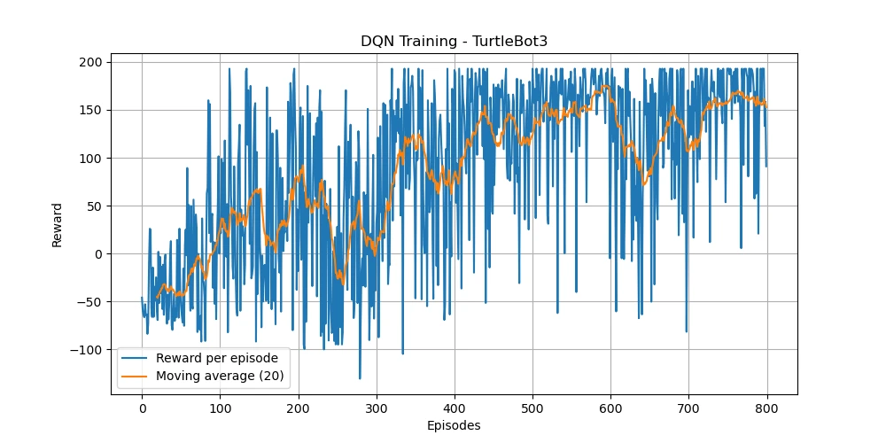
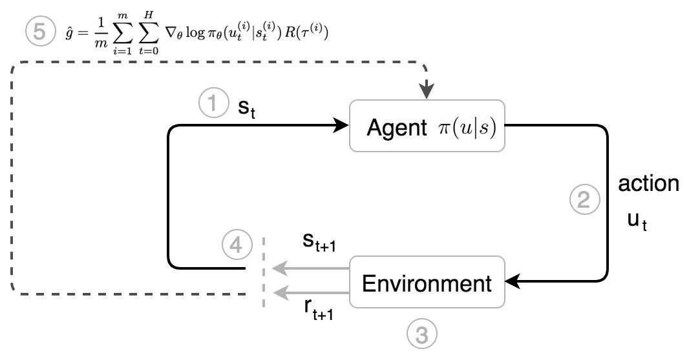

Espaço de observação
Vetor de 20 elementos: 16 distâncias mínimas LiDAR em setores angulares, além de distância frontal mínima e média, deslocamento total e progresso no passo atual.
Duas frentes complementares do nosso trabalho com TurtleBot3: uma arquitetura ROS 2 para missões autônomas de entrega com Nav2 e um ambiente de simulação para comparar três métodos de aprendizagem por reforço em navegação e desvio de obstáculos. O relatório detalhado abaixo avalia os algoritmos de RL; ele não demonstra que a missão de entrega foi otimizada por esses algoritmos.

Duas frentes complementares do nosso trabalho com TurtleBot3: uma arquitetura ROS 2 para missões autônomas de entrega com Nav2 e um ambiente de simulação para comparar três métodos de aprendizagem por reforço em navegação e desvio de obstáculos. O relatório detalhado abaixo avalia os algoritmos de RL; ele não demonstra que a missão de entrega foi otimizada por esses algoritmos.
↗ Abrir relatório completo de RL (PDF, 17 páginas)Um ambiente personalizado integra Gazebo, ROS 2 e Gymnasium. O nó robótico lê LiDAR e odometria, publica comandos de velocidade e reinicia o mundo simulado entre os episódios.
Vetor de 20 elementos: 16 distâncias mínimas LiDAR em setores angulares, além de distância frontal mínima e média, deslocamento total e progresso no passo atual.
Sete comandos discretos no Policy Gradient e Actor-Critic: avançar rápido/lento, girar à esquerda/direita, avançar virando à esquerda/direita e parar. No DQN simples, começamos com três ações.
A recompensa incentiva progresso, movimentos úteis e espaço frontal livre, penalizando proximidade de obstáculos, colisões, giros improdutivos e situações em que o robô fica preso.
Política estocástica com rede 20 → 512 → 256 → 128 → 7, Adam (2×10⁻⁴), γ = 0,99, regularização por entropia, revisões no reward shaping e parada antecipada pela média móvel.
Melhor desempenho geral: 35 dos 50 episódios de avaliação foram classificados como “excelentes” pelos critérios do relatório. As médias móveis das recompensas cresceram durante o treinamento.


A tarefa foi treinada em duas etapas: 400 episódios de navegação simples (três ações, ε-greedy) e depois 800 episódios em cenário mais difícil com passagem pela região central.
Na tarefa simples, a recompensa se estabilizou em torno de 150–170. No cenário complexo, o agente frequentemente aprendeu a girar em círculos para receber recompensa sem seguir a rota pretendida.


Extrator de características compartilhado 20 → 512 → 256 → 128 com duas saídas: ator para a política e crítico para o valor do estado. Treinamento com Adam, γ = 0,99 e regularização por entropia.
O comportamento aprendido foi conservador e local; as médias de recompensa no treinamento ficaram próximas de 50–80, sem a evolução observada no Policy Gradient.


| Método | Resultado observado |
|---|---|
| Policy Gradient | Melhor comportamento geral; 35/50 avaliações “excelentes” |
| Deep Q-Network | Sucesso no cenário simples; exploração indevida da recompensa no cenário complexo |
| Actor-Critic | Política funcional, porém conservadora, com alcance limitado no mapa |
Figuras e gráficos extraídos do relatório de Victor Soares Mesquita e Esli Brian Silva Maciel. As comparações valem para cada condição experimental; os cenários DQN são diferentes dos de Policy Gradient e Actor-Critic.
Um gerenciador recebe solicitações de entrega, inicia a navegação até uma zona e acompanha os estados: WAITING → MOVING → DELIVERED → RETURNING. Nav2, SLAM/AMCL, RViz e Gazebo dão suporte à navegação, localização e simulação. Trata-se de uma frente complementar apresentada junto ao estudo de RL.
O desenho da recompensa e das observações é tão importante quanto a escolha do algoritmo. Recompensa alta não garante a trajetória desejada: o comportamento circular do DQN mostrou a importância de um objetivo explícito. O Policy Gradient apresentou a navegação mais consistente neste protocolo, sem comprovar ótimo global.





Navegue pelas imagens e clique para ampliar.